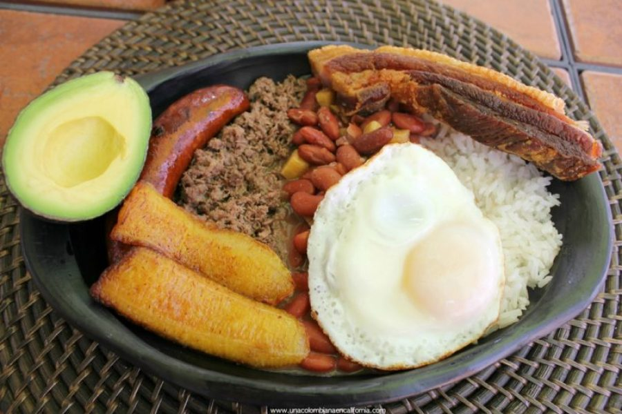

Bandeja Paisa
Dit is hét nationale gerecht van Colombia. Bandeja paisa is van oosprong een boerengerecht en daarom onwijs voedzaam. Dit iconische gerecht is een ware smaakexplosie met zijn combinatie van malse gegrilde steak, knapperige chicharrón (gebakken varkensspek), rijst, bonen, gebakken ei, avocado, plátano (gebakken banaan), en arepa. Je kan het bij veel locale restaurantjes vinden op het 'menu del dia' oftewel het dagmenu. hier betaal je dan maar een paar euro voor en je kan kiezen welk vlees je geserveerd wil krijgen, erg handig voor mensen die op budget reizen om zo toch nog een grote voedzame maaltijd naar binnen te krijgen!

Bron: unacolombiaencalifornia.com
Arepas
Deze ronde, platte maïsbroodjes zijn zacht van binnen en knapperig aan de buitenkant, en ze vormen de basis van vele heerlijke gerechten in Colombia. Of je ze nu belegt met smeltende kaas, combineert met een stevige stoofpot of gewoon als snack eet, arepas zijn een veelzijdig en cruciaal onderdeel van de Colombiaanse keuken. Ze vangen de essentie van Colombiaanse gastvrijheid en laten je proeven van de eeuwenoude tradities die de Colombiaanse keuken zo bijzonder maken.
 Bron: seriouseats.com
Bron: seriouseats.com
Empanadas
Deze goudbruin gebakken deeghapjes zijn gevuld met een smeuïge mix van gehakt vlees, kruiden en specerijen. De knapperige textuur van het deeg vormt een perfect contrast met de smakelijke vulling en zorgt voor een onvergetelijke smaakbeleving. Empanadas zijn een geliefde lekkernij in Colombia, en je komt ze bijna wel overal tegen! in elke supermarkt, tankstation of bij de vele straatverkopers en ze zijn zeker aan te raden!
 Bron: colombiantaste.nl
Bron: colombiantaste.nl
Sancocho
Sancocho is een traditioneel Latijns-Amerikaans stoofgerecht dat in verschillende landen wordt bereid, waaronder Colombia. Het is een stevige soep of stoofpot die meestal wordt gemaakt met een combinatie van vlees, meestal kip, rundvlees of varkensvlees, samen met een verscheidenheid aan groenten en kruiden. Sancocho staat symbool voor comfortvoedsel en familietradities in veel colombiaanse gemeenschappen.
Bron: thekitchn.com